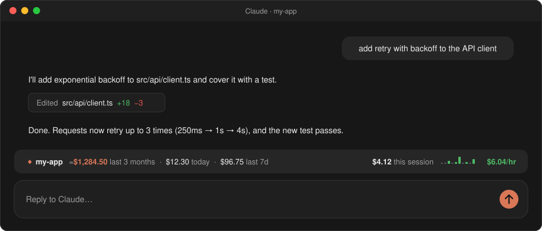
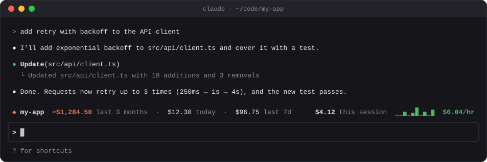

Know where your money goes
A running total for each repo, worktrees included, plus today and the last 7 days. You can see which project is actually expensive.
A mod for Claude Code
repo-spend puts a live bar above the prompt: the repo's running total, today, the last 7 days, and this session's spend and burn rate. No dashboards to open, no exports to run.


Claude Code's /cost tells you about one session. repo-spend tells you about the whole repo, and keeps telling you.
A running total for each repo, worktrees included, plus today and the last 7 days. You can see which project is actually expensive.
On Pro or Max it shows what your usage would have cost at API prices, so you can tell whether the subscription pays for itself. On an API key, it's the credits you've spent.
A sparkline of the last 30 minutes turns amber, then red, as the pace climbs. You notice the $40-an-hour session while it's happening, not on the invoice.
Claude Code deletes logs after 30 days by default. repo-spend keeps weekly totals that never roll off, so the number grows instead of resetting every month. It survives /clear too.
It reads the session logs Claude Code already keeps and makes no network calls. What it stores is cost figures and token counts, never your conversations.
Only changed logs are re-read, so rescanning a busy repo takes about 0.1 s. It fits any width and stacks neatly with other mods' bars.
Every part of the bar answers one question. At narrower widths it drops the least important parts instead of cutting the line off.
/cost shows, subagents included.In a Claude Code terminal session, type this at the prompt:
/plugin install repo-spend --marketplace aseem-upadhyay/qol-mods
Answer y to add the marketplace, then pick the user scope so the bar shows up in every session.
That's it. It also loads in the desktop app's Code tab. Type /repo-spend any time to hide or show it.
Needs macOS or Linux and python3 3.9 or newer. Windows isn't supported yet.